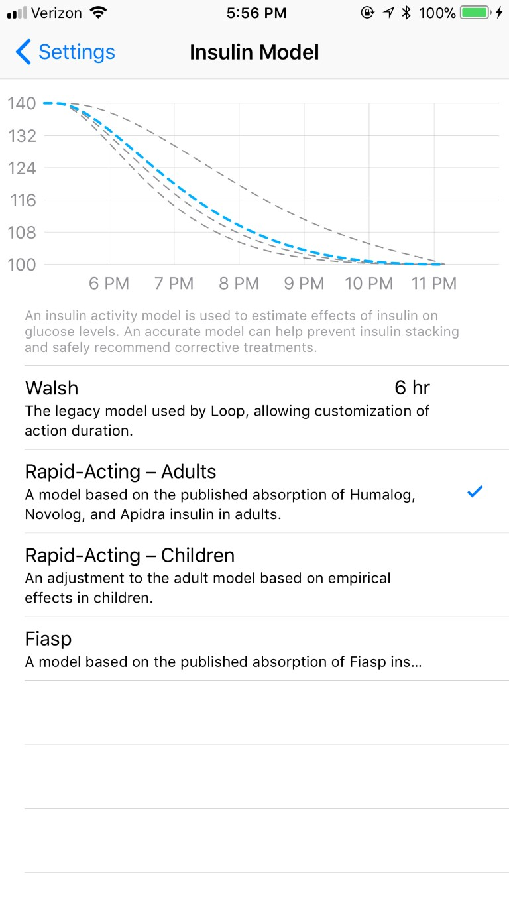

Configuration¶
Cette page couvrira deux parties générales des paramètres de Loop, encerclées en rouge dans la capture d'écran ci-dessous. Les rubriques correspondent à l'ordre d'affichage sur l’écran, de haut en bas.
-
La première section encerclée couvre l’état de boucle fermée/ouverte de votre Loop et le rapport de problème de la boucle.
-
La deuxième section entourée est la zone de configuration. Cette section contient beaucoup de paramètres vraiment importants qui contrôlent la façon dont votre boucle va calculer votre courbe de glycémie prévue. Compte tenu de l'importance de votre courbe de glycémie prévue pour les actions de Loop, Assurez-vous de lire attentivement cette page pour savoir comment naviguer dans les sélections et les entrées.

Boucle fermée/ouverte¶
Le commutateur de Boucle Fermée contrôle si la Boucle active automatiquement les réglages de basal temporaire recommandés (mode Boucle Fermée) ou si vous devez appuyer manuellement pour activer les recommandations (mode Boucle Ouverte). En plus de l'indicateur visuel de ce commutateur discuté ci-dessous, l'icône d'état de la boucle sur l'écran principal apparaîtra également différemment en fonction du mode sélectionné. Le mode Boucle Ouverte aura un cercle incomplet pour l'icône de statut de la Boucle.
Mode Boucle Ouverte¶

Lorsque l'interrupteur Boucle Fermée est dans la position (Off ), la Boucle N'INJECTERA PAS automatiquement les Basals temporaires recommandées. Au lieu de cela, la boucle affichera les Basales temporaires recommandées sur l'affichage de l'état principal, juste au-dessus du graphique de glycémie. Ceci est appelé boucle ouverte, et est une bonne façon de comprendre comment la boucle va fonctionner, et quel type de recommandations il ferait. Si vous cliquez sur la ligne basale temporaire recommandée en mode boucle ouverte, Loop exécute l'ordre préconisé de le basal temporaire.
Mode Boucle Fermée¶

Lorsque l'interrupteur Boucle Fermée est en position ( On ) La boucle INJECTERA AUTOMATIQUEMENT les Basals temporaires recommandés via la pompe à insuline configurée. C’est ce qu’on appelle la boucle fermée. En règle générale, Loop affichera le basal temporaire recommandé juste au-dessus du graphique de glycémie avant de l’adopter automatiquement. Il peut prendre une minute ou deux pour que la Boucle promulgue le basal recommandé. Une fois que le basal temporaire a été activé avec succès sur la pompe, le basal temporaire recommandé disparaîtra de l'écran et le nouveau taux de basal temporaire sera représenté dans les graphiques de distribution d'insuline.
Rapport de problèmes¶
Si vous rencontrez des problèmes ou des erreurs avec votre Loop, un rapport de problèmes peut être utilisé pour aider à identifier où le problème se produit. Le rapport de problème est généré automatiquement et vous pouvez le partager par e-mail. Souvent, si vous cherchez de l’aide pour un problème technique, un rapport de problème fournira un aperçu pour les développeurs et les dépannages. Veuillez vous envoyer un rapport de problème à chaque fois que vous vous interrogez des comportements ou des affichages de Loop. Vous pouvez ensuite utiliser ce rapport de problèmes plus tard pour aider à déboguer le problème.
Avant de continuer plus loin, un mot sur les unités Glycémie
Les entrées dans la section de configuration seront disponibles en mg/dL ou mmol/L automatiquement, en fonction de la façon dont vos valeurs de glycémie sont reçues. Par défaut, ils sont définis à mg/dL, cependant une fois que les valeurs CGM arrivent en mmol/L, ces paramètres Loop peuvent être saisis en mmol/L. Si vous prévoyez d’utiliser du mmol/L, assurez-vous d’attendre de définir vos entrées jusqu’à ce que vous avez commencé à recevoir des valeurs CGM en boucle. Si vous les faites dans le mauvais ordre, vos graphiques et entrées peuvent avoir des unités incorrectes.
Plage de Correction¶
La plage de correction est la plage de glycémie vers laquelle vous voudriez que Loop vous corrige. La plage de correction n’est pas nécessairement la même plage "cible" de glycémie discutée avec votre endocrinologue ; en règle générale, la plage du médecin est beaucoup plus large. Par exemple, vous pouvez garder un objectif de correction de 100-110 que Loop s'efforcera de viser, mais utilisez une plage cible de glycémie souhaitée entre 80-180 lorsque vous en discutez avec votre endo sur « la zone dans la cible ».

Cliquez sur le + dans le coin supérieur droit pour ajouter des plages de correction de glycémie. Vous pouvez avoir plusieurs plages basées sur l'heure de la journée, mais le premier réglage de la journée doit commencer à minuit.
Les plages de correction peuvent être un nombre unique, comme 100-100 mg/dL, ou une plage telle que 100-120 mg/dL. En général, si vous choisissez d'utiliser une gamme, garder la plage entre 10 et 30 mg/dL entre la valeur la plus basse et la plus élevée est un bon point de départ.
Plage de substitution¶
Au-dessous de la zone de correction se trouve une section appelée « Substitution » avec un paramètre Pré-Repas. Pendant son activation, les cibles pré repas remplaceront la plage de correction habituelle pour les recommandations de Basal temporaire de Loop. Si une plage de pré-repas n'est pas entrée dans cette section, l'icône restera grise et inutilisable sur la barre d'outils de l'écran principal.
La cible de substitution avant repas (ou pré-repas) peut être utilisée comme moyen facile d'obtenir une petite quantité d'insuline avant un repas afin d'aider à contrôler les pics de glycémie post-repas.
Si votre cible normale est de 100-110 mg/dL et que la cible avant le repas est de 80-80 mg/dL, par exemple, Loop vous donnera un petit coup supplémentaire pour vous amener au nombre cible inférieur avant le repas. Cette dose d'insuline vous prépare à un repas avec un mini-prébolus. La cible du pré-repas, lorsqu'elle est activée en appuyant sur l'icône, restera active pendant une heure, jusqu'à ce que les glucides soient saisis, ou jusqu'à ce qu'ils soient annulés manuellement... quelle que soit l'action qui a été faite en premier.
La boucle ajustera tous les bolus d'insuline selon les besoins en fonction de l'insuline supplémentaire fournie pendant cette période pré-repas.
Seuil de suspension¶
Le seuil de suspension doit être mis en place pour la configuration réussie de Loop. votre boucle ne deviendra pas verte sans définir cette valeur. cette valeur affecte à la fois bolus et recommandations basales par Loop.
Bolus¶
- Si vous essayez d'injecter un bolus pour un repas alors que n’importe quelle partie de la courbe prévisionnelle de glycémie est en dessous de cette valeur seuil de suspension, Loop ne recommandera pas un bolus. Au lieu de cela, vous devrez attendre que votre courbe de prédiction soit supérieure à la valeur de seuil de suspension afin de pouvoir faire un bolus.
Basal¶
- Si votre point actuel ou n'importe quel point de votre courbe de glycémie prévue est inférieur au seuil de suspension, La boucle recommandera toujours un débit basal temporaire de 0 U/h.
Les paramètres raisonnables pour le seuil de suspension dépendront de la préférence de l'utilisateur, mais il n'est pas recommandé de définir une valeur inférieure à 65 mg/dL.
Débit Basaux¶
**Remarque : Vous ne pouvez pas entrer de débits basaux tant que vous n'avez pas ajouté une pompe dans les paramètres de Loop. * Vos débits de basal seront initialement remplis lorsque vous compléterez la partie Ajouter une pompe de la configuration au début de ce guide d'installation.
Un seul planning de basal peut être défini dans chaque application Loop. Les incréments de basal sont disponibles en fonction de la precision incrémentale de la pompe/pod que vous utilisez. Toutes les pompes ne fournissent pas les mêmes incréments pour les injections de basal. L'horaire de basal doit commencer à minuit et ne peut pas contenir des taux de 0 U/h.
Pour modifier une ligne dans votre planning de basale, appuyez sur la ligne et ajustez l'heure et/ou le montant. Pour supprimer une ligne, sélectionnez Modifier en haut à droite et supprimez-la. Si en appuyant sur la ligne, cela ne fonctionne pas, essayez de fermer et de rouvrir l'application. Lorsque l'édition est terminée, cliquez sur le bouton Enregistrer dans la pompe... ou Synchroniser avec le Pod en fonction de la pompe que vous utilisez.
Si vous faites des modifications de basal et utilisez le bouton Annuler pour retourner au menu sans enregistrer / synchroniser avec succès vers la pompe/pod, les modifications que vous avez apportées ne seront pas enregistrées. La boucle fait de l'enregistrement/synchronisation vers la pomper une étape obligatoire pour éditer correctement les débits de basal. Si vous obtenez un message d'erreur en essayant de sauvegarder/synchroniser les taux de basal modifiés, veuillez réessayer jusqu'à succès.
Limites d'Administration¶
Le taux de basal maximum et les paramètres de bolus maximum sont collectivement désignés sous le nom de limites de livraison. Cette section aura d’abord été peuplée lorsque vous avez terminé la ajouter la Pompe partie de la configuration vu précédemment. Pour plus de sécurité, similaire à l’horaire basal, vous devez conserver ces valeurs de la même façon à la fois sur l’application Loop et dans les paramètres de la pompe/pod. Si vous modifiez ces paramètres dans l'application Loop, utilisez toujours le bonton Enregistrer dans la pompe... ou Synchroniser avec le bouton Pod selon la pompe que vous utilisez.
Débit Basal Maximum¶
Le débit basal maximal limitera le débit de base temporaire maximal autorisé par Loop pour atteindre votre plage de correction. Généralement, les utilisateurs de Loop définissent leur débit basal maximum autour de 3-4 fois leur taux de basal le plus élevé. Lorsque vous commencez à utiliser Loop pour la première fois, il est sage de commencer à choisi une approche prudence en définissant votre taux (bas) de basal maximum . Si vos paramètres sont incorrects dans d'autres zones (débit basal, sensibilité à l'insuline, Ratio de glucides, etc.), vous aurez peut-être besoin de temps pour identifier où les paramètres doivent être ajustés. Ce processus est plus facile si Loop a moins de latitude pour fixer des taux basaux élevés. Augmentez graduellement votre taux basal maximum à mesure que votre confort et votre confiance en Loop augmentent. Si vous avez besoin d'aide pour régler vos paramètres, rendez-vous sur LoopTips pour quelques aide de configuration initiale
Bolus Maximum¶
Entrez ici la valeur désiré maximale votre bolus. Pour plus de sécurité, ne fixez pas de limite bolus maximale plus élevée que votre bolus typique de repas copieux.
Modèle d'insuline¶
Il y a quatre modèles d'insuline parmi lesquels il faut choisir: Walsh, A action rapide pour Adultes, A action rapide pour Enfants et Fiasp. Si vous voulez lire la discussion pertinente qui s'est penchée sur le développement des courbes Rapid-Acting et Fiasp (collectivement appelées "modèles d'insuline exponentielle"), vous pouvez le voir sur GitHub ici.
Nous vous recommandons fortement de choisir l'un des modèles d'insuline exponentielle (en d'autres termes, pas le modèle Walsh).
Une erreur habituelle des nouveaux utilisateurs de Loop est de sélectionner le modèle Walsh afin de réduire facilement leur durée d'insuline (DIA) à celle qu'ils avaient utilisée avant de boucler. Cela conduit presque invariablement à l’empilage d’insuline. Si vous souhaitez en savoir plus sur les raisons pour lesquelles la durée de l'action d'insuline est importante dans Loop par rapport à comment vous l'avez traditionnellement utilisée, veuillez cliquer ici pour lire un article de blog sur le sujet. En résumé, choisir la courbe Walsh simplement pour raccourcir votre DIA conduira à l'empilage d'insuline et sera inférieur aux recommandations de bolus souhaitées.
Vous pouvez cliquer sur chaque modèle et voir à quoi ressemble la courbe d'activité de l'insuline de chaque modèle, l'active est sélectionnée en bleu.

Les différences entre les trois modèles exponentiels (deux modèles à actions rapide et Fiasp) sont liés au moment du l'activité du pic d'insuline. Pas étonnant, puisque Fiasp est commercialisé comme l’insuline « à action plus rapide ». Actuellement, tous les modèles exponentiels sont par défaut basés pour une durée d’insuline de 6 heures, mais l’activité maximale des courbes diffère:
- Le pic de courbe adulte à action rapide est à 75 minutes
- Le pic de courbe enfant à action rapide est à 65 minutes
- Les pics de Fiasp se situe vers 55 minutes
Ratios de glucides¶
Cliquez sur le + en haut à droite pour ajouter des ratios de glucides pour diverses heures de la journée. Loop fonctionne mieux si vous avez testé et optimisé vos paramètres de taux de glucides avec précision.
!!!info « Méfiez-vous des autres applications qui écrivent des glucides à l’application Santé »
Si vous utilisez une application tierce (comme Spike ou MyFitness) qui peuvent écrire des glucides sur l'application Santé du téléphone, vous devrez modifier les permissions pour vous assurer que Loop ne double pas les entrées de glucides. Vous devez désactiver les permissions de l'application tierce dans Santé afin qu'elle ne puisse que `lire` et non `écrire`. Voir [Entrées de Glucides avec des applications tierces](../features/carbs.md#third party-apps) pour plus d'informations sur ce paramètre.
Facteurs de sensibilité à l'insuline¶
Le facteur de sensibilité à l'insuline (FSI) est le même terme que le facteur de correction utilisé dans certaines cliniques et bureaux endocrinologiques. La FSI représente la baisse du taux de glycémie prévue à partir d'une unité d'insuline. Cliquez sur le + en haut à droite pour ajouter des sensibilités à l'insuline pour diverses heures de la journée. Loop fonctionne mieux si vous avez testés et optimisés les paramètres FSI pour plus de précision. Les sensibilités à l’insuline peuvent changer pour de nombreuses raisons, y compris attendre trop longtemps pour changer votre ensemble de perfusion. Loop ne détectera pas automatiquement les modifications apportées à l’ISF.
Le FSI mal réglé est la cause la plus fréquente de glycémie en forme de montagnes russes pour les nouveaux utilisateurs de Loop. Vous devrez augmenter votre valeur/nombre FSI pour aider à lisser une tendance glycémique en montagnes russes. Vous pouvez en savoir plus sur ce sujet dans LoopTips ici.
Prochaine étape: Services de Loop¶
Vous avez terminé les configurations et paramètres requis dans votre application Loop. Si vous avez un site Nightscout auquel vous souhaitez connecter Loop, veuillez continuer sur la page des services de boucle.
Si vous n'avez pas un site Nightscout et que vous ne voulez pas de services de journalisation optionnels connectés, alors veuillez vous rendre à la page d'affichage de la boucle . Comprendre les affichages Loop peut être un outil précieux pour comprendre les actions de votre Boucle, et aussi pour le dépannage, si vous avez des problèmes.